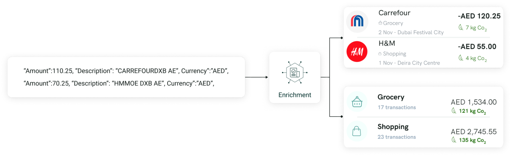

How UX is shaping the future of digital banking and why it's no longer an option not to have one
If you're looking to make your bank more in tune with the users of today and tomorrow, it's time to reassess how you're serving them.
Published on

If you're looking to make your bank more in tune with the users of today and tomorrow, it's time to reassess how you're serving them.
It takes the average customer 80% longer to complete their banking interactions in a physical space than it does in an online space. What does this mean? This means that there's a major flaw and room for improvement in the traditional brick-and-mortar banking system and digital banking combined with financial data enrichment without a question is more efficient
Sitting through hours of paperwork before you get to do any actual work is not anyone's idea of a good time.
A New Era of Banking
The world is changing. Gone are the days when the bank would lock you into an inconvenient operating schedule and rigid cash withdrawal procedures. How things used to be, you know?
According to a survey, millennials reported the highest usage of mobile banking apps. Almost 95% of millennials regularly use mobile banking apps, and for Gen Z's and boomers, the number is around 85%
That's like saying that almost all customers of financial institutions use digital banking to check their balances, transfer money, and pay bills on a regular basis.
So it's undeniable that serving customers online in the best way possible is essential to the growth and success of financial institutions
And that's where UX strategies and financial data enrichment come in, they're the secret recipe behind fintech companies as they compete with traditional banks to deliver a better customer experience.
What is UX in digital banking?
In a nutshell, UX and financial data enrichment are about figuring out what the best possible experience for a user can be, it's how a person feels when interacting with a product or service.
It is a mix of impressions, emotions, and attitudes toward the software. The objective? To enhance the quality of their lives. A truly happy user will result in a better conversion rate, higher engagement rate, and more sales.
For digital banking customers, this means having more control of their finances, knowing where their money is going, throwing away all the messy data, and navigating account statements and other services with ease and simplicity -
All to empower customers to make well-informed decisions which lead to a better financial life
Why is having a good UX essential for digital banks?
Because financial institutions are all offering similar products and services and there's only so much that can be done to differentiate oneself from the competition, outstanding UX coupled with financial data enrichment is key. After all, it's the first point of interaction a customer will see, and where they will decide if they want to go further with the app or not.
Here’s a look at why financial institutions should invest in UX:
- Generate trust & customer retention
When it comes to money, most people take it very seriously. They want to feel secure with their bank, and they will not compromise on using an app that doesn't provide a good user experience. A bad user experience could give the impression of insecurity and might give the idea that the bank doesn't really care about its customers' money.
- Reduced sales funnel
The more steps a customer needs to take to complete an action, the higher the chance that they will abandon that action. By improving your UX, you can reduce the number of steps required in the sales funnel.
- Increase in usage and engagement
When your design is simple, intuitive, and clutter-free, you reduce the number of drop-offs and increase engagement. This leads to more conversions for the business.
What defines a "good" UX in digital banking?
A really good UX is basically a seamless, trouble-free experience across all applications and touchpoints. This means banks need to shift their focus towards making it easy for the user to find what they're looking for and have access to vital information at their fingertips.
Based on numerous studies and expert reviews, here are some of the main factors that digital banking customers look for in terms of UX:
- Simplicity
Users are obsessed with doing what they need to do as quickly as possible. Products that require less effort to use will be more successful than those that do not.
- Transparency
Good transparency helps ensure that the users of your application know what will happen as a result of their actions. It builds trust in your product, especially in cases when the user is unfamiliar with how it works.
- Personalized
Financial institutions should develop services that meet the unique needs of each customer. Financial data enrichment can help those institutions use customer data to anticipate users’ needs and offer personalized products based on those needs.
- Support
From live chats to FAQs, a good UX should be integrated with technology providers to find out how to deliver more value and help customers get things done faster, better and easier.
- Security
When it comes to digital banking, secure design is important for protecting users' sensitive information. There are a number of UX security measures that can be taken. End-to-end encryption, and two-factor authentication, are all strategies that highlight a secure design.
The role of financial data enrichment in redefining UX
To improve the UX for their customers, Banks use data enrichment solutions to clean and organize financial data using payment data enrichment API.
The technology pulls information from messy data sources, applies rigorous business logic, and processes the information for more simplified use. Here are some benefits of coupling UX with data enrichment:

- Clean brand names, logos, amount, name, and categories
- Have a complete view of the customer's spending behavior
- Replacing manual processing with automation
And much more.
Conclusion
To sum it all up, banks with a good user experience create loyal customers and these loyal customers enjoy their bank more. In the end, it's all about creating trust from the customer and weeding out any doubt that might delay a purchase or prompt them to shop around. A shift is happening in the banking industry. With customers' online experiences evolving rapidly, it's more important than ever for banks to offer a rich, personalized experience.
Reach out to us if you're interested in accelerating your digital banking strategy and learning more about how we help customers with similar use cases.